install/desktop-niri-uefi-unencrypted FAIL
20261104T222254Z-install-desktop-niri-uefi-unencrypted-1 · attempt 1 · 1073 s · class -
Reason: Installed Niri desktop is unusable on the reference VM: niri reports zero outputs (Error::DeviceMissing importing virtio-gpu) and the desktop frame is black, although install, greeter authentication, session processes, Shell IPC and installed profile are correct. Root cause unattributed pending HorneroOS/config#121; physical hardware NOT TESTED.
Instruction
Boot the candidate ISO in a disposable VM (UEFI firmware, blank target disk), launch the graphical installer, choose HorneroOS Desktop — Niri (Experimental), without encryption, create the QA user, let installation finish, reboot with the ISO detached, authenticate at the greeter, and leave the installed desktop running for the proofs.
Proof
| where | kind | note | detail | |
|---|---|---|---|---|
| ❌ | manual-import | manual | Operator-supplied verdict for the manual run; see RESULT.md. No scenario proof probe results are recorded by the importer. | logs/RESULT.md |
Product and environment
| iso | horneroos-2026.10-preview32-x86_64.iso |
|---|---|
| iso_sha256 | b8cd0f8604bc69f7d2112fb8bccd97115d32d197e9c92c62e02faf5de6345aec |
| installer_sha | 329e66831ad5a31e48c466771f015ef05568e571 |
| product_sha | a44964197c456fa44faeaff675206705c7bbdf1b |
| engine | manual-qmp-install-harness |
| hornero_qa | 0.1.0 |
| source_dir | preview32-desktop-niri-uefi |
| imported_via | hornero-qa import |
Screenshots

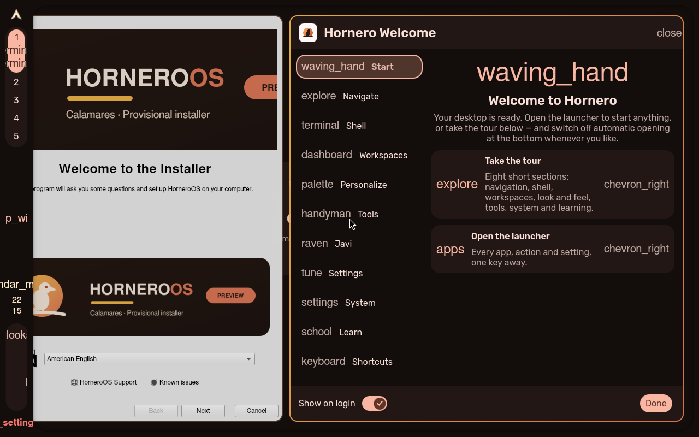


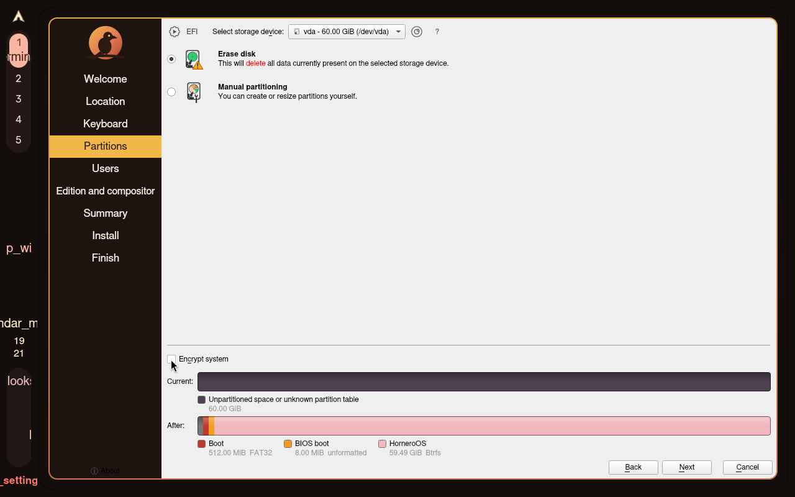

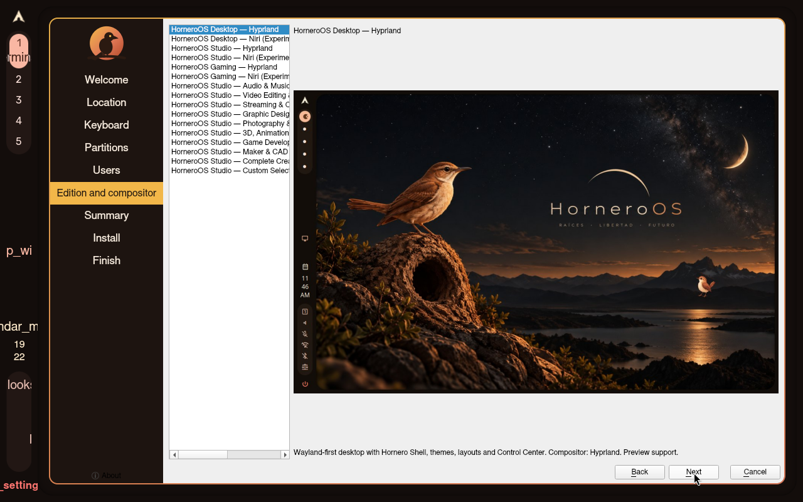

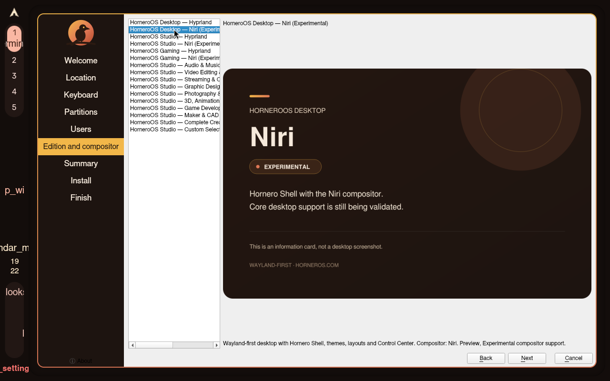

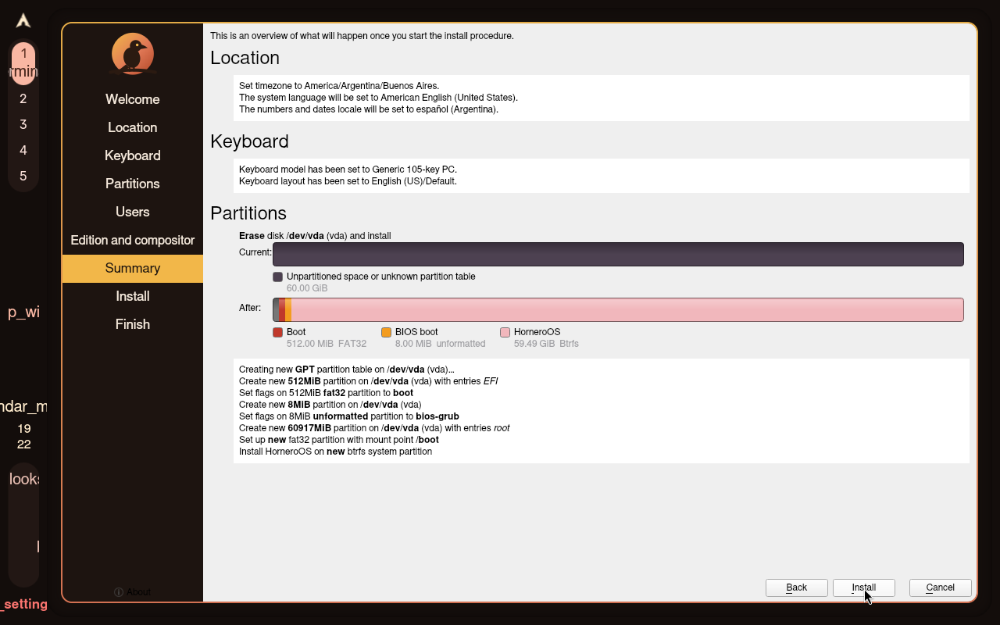

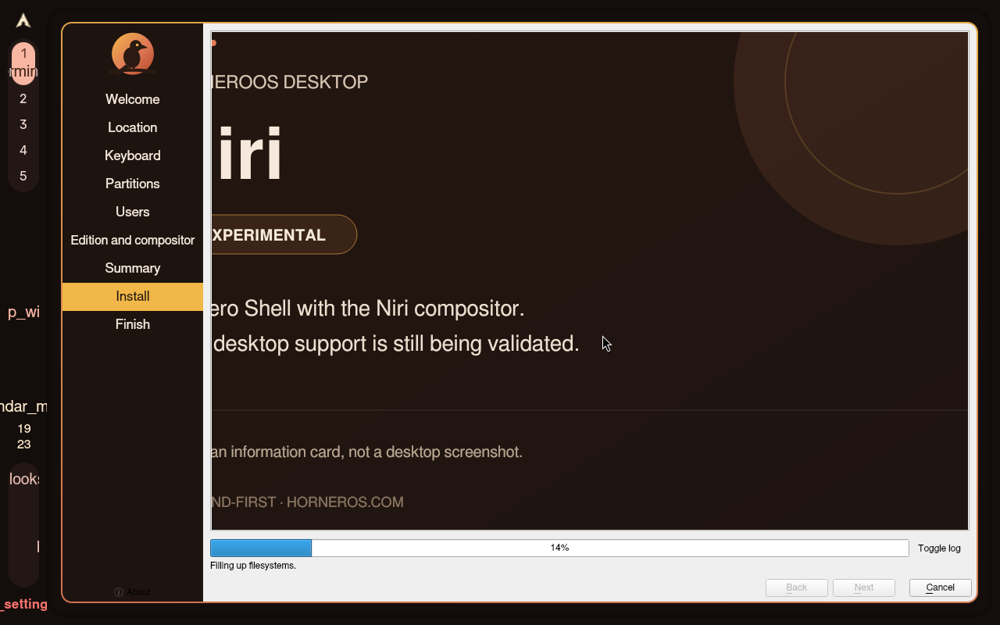

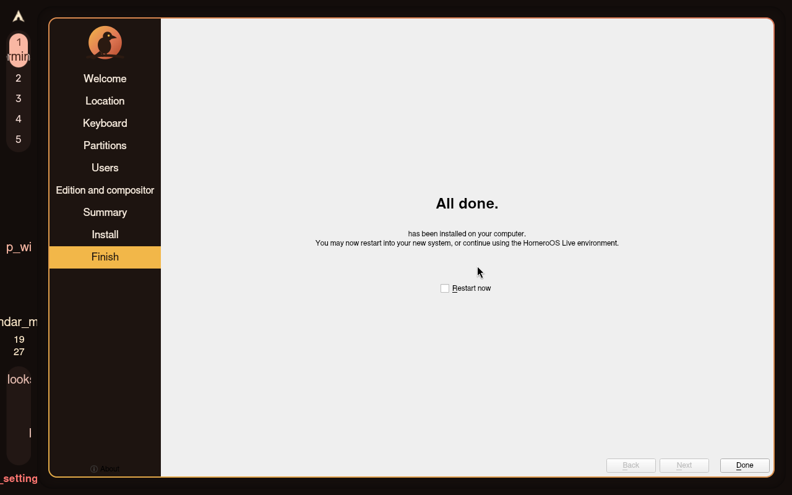

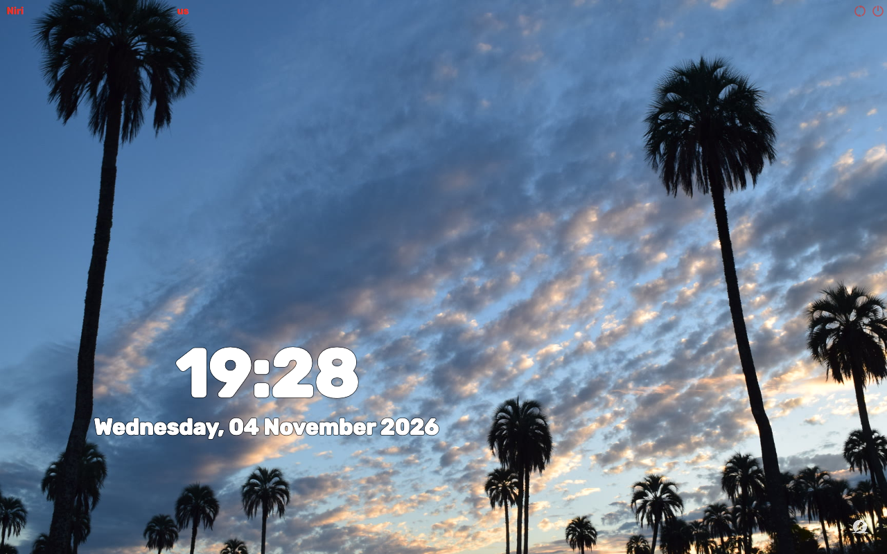


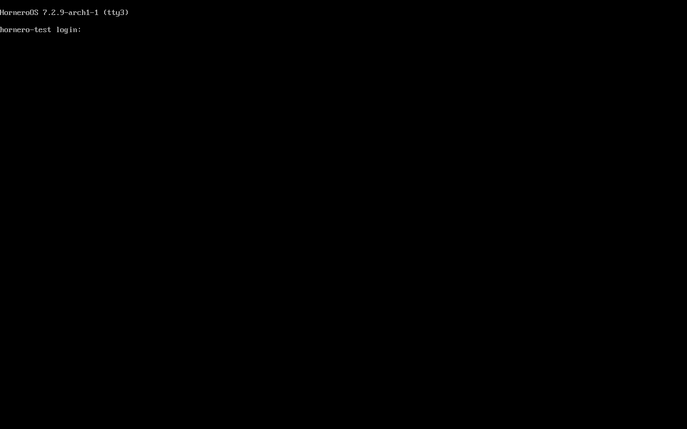

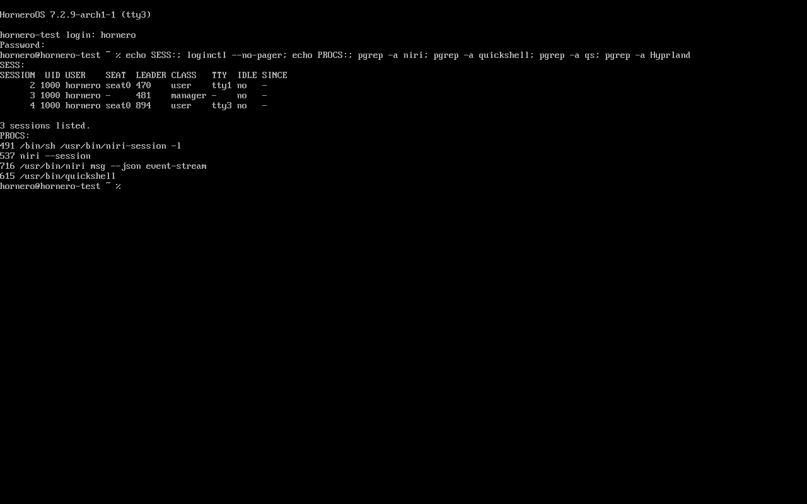

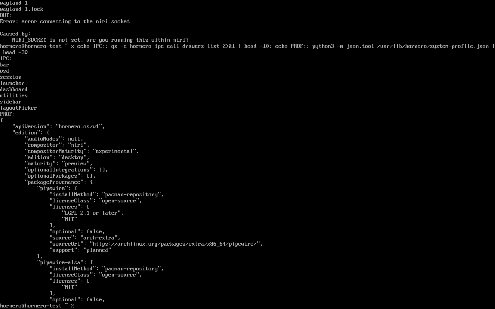

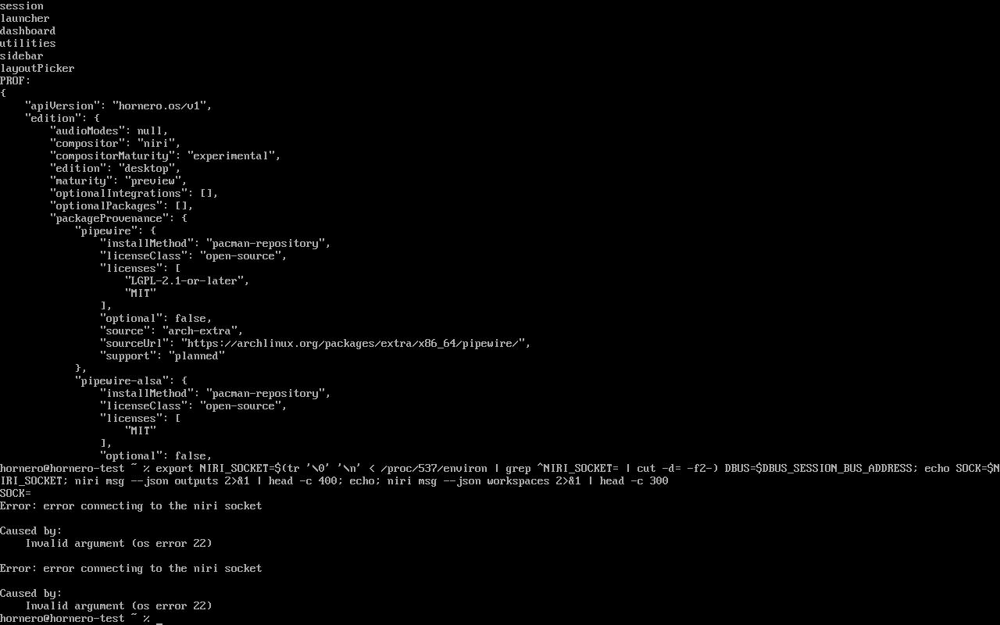

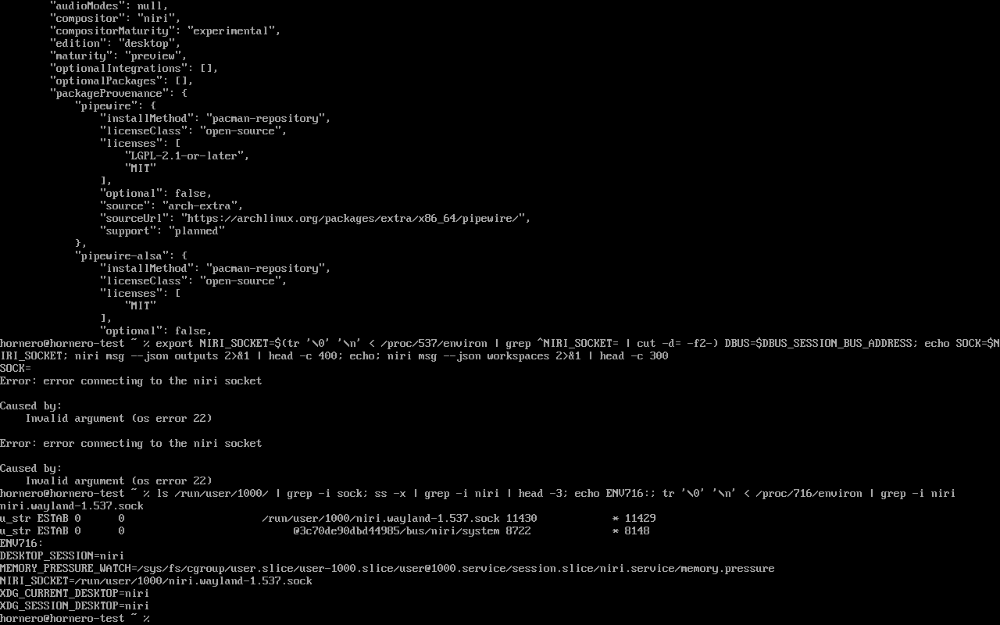

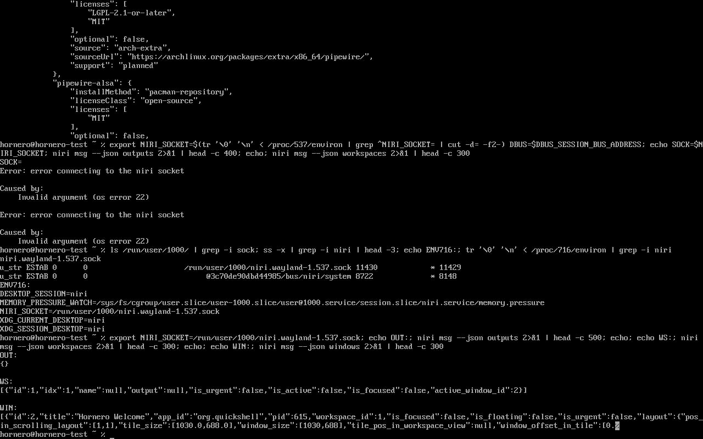

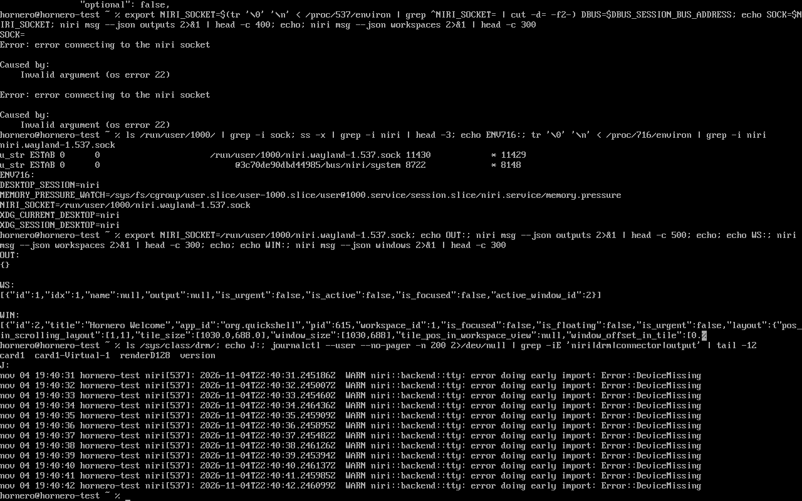
Actions
{"t": 0, "kind": "manual-run", "source": "preview32-desktop-niri-uefi"}
{"t": 1073, "kind": "import", "tool": "hornero-qa import", "result_md": "logs/RESULT.md", "screenshots": 18}
Logs: logs/ · machine-readable: run.json, result.json, assertions.json, actions.jsonl